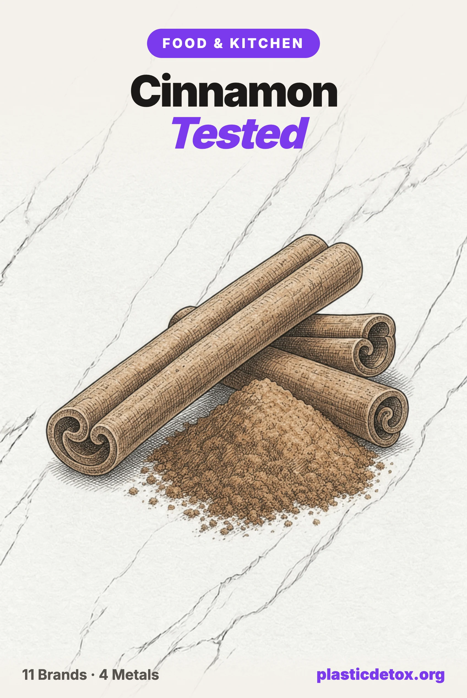

Cinnamon Brands Tested for Lead and Cadmium (2026): 11 Brands Compared

On September 24, 2026, Galil Importing Corp recalled its Lior Cinnamon Ground Seasoning after a Maryland health department test came back with elevated lead. It is the third wave of cinnamon lead trouble since 2023, and it will not be the last, because independent lab testing keeps finding the same thing: lead in most mainstream cinnamon and cadmium in essentially all of it, organic included. Here is what the actual numbers show, brand by brand, and what to do with that information.
The 30 Second Summary
- A cinnamon product was just recalled for lead, again. Galil Importing Corp's Lior Cinnamon Ground Seasoning, sold in six states, was pulled September 24, 2026. No official lead level has been published.
- Consumer Reports found 1 in 3 mainstream cinnamon products over its action threshold in 2024. Testing 36 products, the worst three brands measured 2 to 3.5 parts per million lead and pulled themselves from shelves once told.
- Independent 4 metal testing found something Consumer Reports did not look for: cadmium. Lead Safe Mama's lab results on 11 popular cinnamon products found cadmium in all 11, and lead in 10 of 11, including organic brands.
- No brand in either dataset tested clean across the board. The lowest lead readings still carried real cadmium, and the one non detect for lead carried the second highest mercury reading measured.
- The fix is behavior, not a brand. Buy whole sticks over ground where you can, grate or grind what you need, and treat cinnamon as an occasional spice rather than a daily one to two teaspoon supplement.
1. This Week: Another Cinnamon Recall
Galil Importing Corp, a Hauppauge, New York food distributor, recalled its Lior Cinnamon Ground Seasoning on September 24, 2026, after the Maryland Department of Health tested a sample and found elevated lead. The recalled cinnamon shipped to retail stores, grocery stores, delis, and supermarkets in New York, New Jersey, Pennsylvania, Texas, Florida, and Illinois between November 18, 2025, and September 7, 2026, sold in 90 gram transparent plastic containers under lot code GAP11304. No illnesses have been reported. If you have this product, the FDA's guidance is to throw it away or return it for a refund rather than finish it off.
2. Why Cinnamon Keeps Testing Positive
The reason this keeps happening traces to a single, well documented outbreak. In October 2023, the FDA recalled WanaBana, Schnucks, and Weis brand cinnamon apple fruit purée pouches after they were linked to acute lead poisoning in young children. By the time the CDC closed its investigation, it counted 566 cases across 44 states, D.C., and Puerto Rico, 130 confirmed and 401 probable. The source was traced to a single Ecuadorian cinnamon processor whose product measured as high as 5,110 parts per million of lead, over 2,000 times the level international food standards were considering for bark spices. The mechanism was not contamination, it was adulteration: lead chromate, a cheap yellow orange pigment, added deliberately to increase a batch's weight and color.
The outbreak triggered a wider look. In March 2024, the FDA sent letters to cinnamon manufacturers and importers reminding them of their obligation to test for contaminants, and it is pursuing congressional authority to require pre-market testing on ingredients aimed at infants and young children. New York State's own testing program, run independently of the FDA, went on to catch elevated lead in cinnamon from at least 16 additional brands through mid-2024, including a July 2024 recall of ground cinnamon from American Spices LLC. None of this was one factory. It was routine testing finally looking somewhere it had not looked closely before, and it kept finding the same problem.
Cadmium is a different story, and a quieter one. Unlike lead, it is not usually added on purpose. Cinnamon trees take cadmium up from the soil they grow in the way root vegetables and cacao do, which is why organic certification, a marketing standard that says nothing about heavy metals, does not lower it. That distinction matters for everything that follows: a bad lead reading points at a specific supplier or a specific adulteration event, while cadmium in cinnamon looks closer to a property of the crop.
3. What Consumer Reports Found in 36 Brands
In September 2024, Consumer Reports published its own test of 36 cinnamon powders and spice blends, independent of the recalls above. About a third came back over 1 part per million (1,000 ppb) of lead, the threshold New York State uses to trigger a recall. There is no federal limit for lead in cinnamon specifically, so CR used that state figure as its own bar. The worst three results came from smaller, less widely distributed brands, and both of the two Consumer Reports named directly stopped selling the flagged product once told.
| Product | Lead (Consumer Reports, 2024) | Status |
|---|---|---|
| Paras Cinnamon Powder | 3.52 ppm, the highest of the 36 products tested | Brand stopped selling it once told |
| EGN Cinnamon Powder | 2.91 ppm | Brand stopped selling it once told |
| Mimi's Products Ground Cinnamon | 2.03 ppm | Over CR's 1 ppm recall threshold |
| Morton & Bassett Organic Ground Cinnamon | 0.04 ppm (40 ppb) | Lowest tier for lead; not tested for cadmium, mercury, or arsenic |
| Loisa Organic Cinnamon | 0.04 ppm (40 ppb) | Lowest tier for lead; not tested for cadmium, mercury, or arsenic |
| Sadaf Cinnamon Powder | 0.04 ppm (40 ppb) | Lowest tier for lead; not tested for cadmium, mercury, or arsenic |
| 365 by Whole Foods Market Organic Ground Cinnamon | 0.02 ppm (20 ppb), in CR's 2024 sample | Lowest reading in CR's test; see section 4 for a different result a year later |
Two things are worth naming plainly. First, even CR's cleanest results, 20 to 40 ppb, sit well above the 5 ppb bar the proposed Baby Food Safety Act of 2021 sets for lead ingested by children, the same standard we hold every ingestible to. A "good" result in this category is still a detectable one. Second, CR tested for lead only. It did not test cadmium, mercury, or arsenic, so a clean CR result is not a clean bill of health, it is a clean result on one of four metals that matter. That gap is exactly what the next round of testing filled in.
4. The Deeper Problem: 4 Metals, 11 Brands
Lead Safe Mama, LLC runs a separate, ongoing testing initiative, sending community nominated products to an independent third party lab for lead, cadmium, mercury, and arsenic together. Its cinnamon results, tested between October 2024 and October 2025 and published as a running comparison chart, cover 11 products: 4 cinnamon sticks and 7 ground cinnamons, 9 of the 11 organic. The proposed 2021 action levels for anything a child eats are 5 ppb lead, 5 ppb cadmium, 2 ppb mercury, and 10 ppb arsenic. Every single product tested positive for cadmium, all of them well above that bar. Ten of the eleven tested positive for lead.
| Product | Lead | Cadmium | Mercury | Arsenic |
|---|---|---|---|---|
| SonnentoR Organic Ceylon Cinnamon (ground, Austria) | 1,000 ppb | 52 ppb | 149 ppb | 24 ppb |
| Frontier Co-Op Organic Ceylon Cinnamon (ground) | 243 ppb | 84 ppb | <5 ppb | 12 ppb |
| 365 by Whole Foods Market Organic Ground Cinnamon (2024 test) | 16 ppb | 120 ppb | <5 ppb | <5 ppb |
| Simply Organic Cinnamon Sticks | 17 ppb | 131 ppb | <5 ppb | <5 ppb |
| Simply Organic Ground Ceylon Cinnamon | 543.2 ppb | 131.7 ppb | 7.16 ppb | 16.71 ppb |
| Frontier Co-Op Ceylon Cinnamon Sticks, Organic | <5 ppb, non detect | 146 ppb | 103 ppb | <10 ppb |
| Frontier Co-Op Vera Grade AA Cinnamon Sticks (conventional) | 26 ppb | 165 ppb | <5 ppb | <10 ppb |
| 365 by Whole Foods Market Organic Ground Cinnamon (2025 retest) | 109.6 ppb | 165.7 ppb | <5 ppb | <10 ppb |
| McCormick Gourmet Organic Saigon Cinnamon Sticks | 56 ppb | 289 ppb | 8 ppb | 5 ppb |
| Amazon Grocery Ground Cinnamon (conventional, Saigon) | 545.4 ppb | 301.2 ppb | 10.55 ppb | 31.38 ppb |
| Kirkland Signature Organic Ground Saigon Cinnamon | 493.4 ppb | 382.7 ppb | 12.79 ppb | 14.94 ppb |
Independent, third party laboratory results reported by Lead Safe Mama, LLC. Proposed 2021 action levels for food eaten by children: lead and cadmium 5 ppb, mercury 2 ppb, arsenic 10 ppb. A green cell still often sits above that bar; it marks the lowest readings measured, not a clean pass. See the sources at the bottom of this article for links to the individual lab reports.
A few patterns are worth pulling out on their own. The product with the highest lead, SonnentoR's Ceylon cinnamon at 1,000 ppb, had the lowest cadmium of the eleven, and the product that tested completely non detect for lead, Frontier's organic Ceylon sticks, carried the second highest mercury reading in the whole set, at 103 ppb. Metals do not move together, so a brand that reassures you about one is not telling you about the others. Ceylon cinnamon, marketed as the gentler, lower coumarin choice, produced both of the two highest mercury readings and the single highest lead reading. There is no evidence in this data that Ceylon is the safer type.
5. Does Glass or Plastic Packaging Matter Here?
Not for the numbers above. Every metal in this dataset is already in the cinnamon before it ever reaches a jar. Cadmium comes up through the tree's roots from the soil it grew in, and lead arrives from grinding equipment or, in the worst cases, is stirred in on purpose as lead chromate to bulk up a batch. A glass jar cannot filter that out on the way in, and a plastic one cannot add to it. Simply Organic's Ceylon ground cinnamon and its cinnamon sticks ship in the same style of glass jar, and tested at 543.2 ppb and 17 ppb lead respectively, a 30 fold difference inside identical packaging from the same brand.
We checked what each tested product actually ships in anyway, because that is the question this site exists to answer even when it turns out not to be the one that decides the result here.
| Product | Packaging |
|---|---|
| McCormick Gourmet Organic Saigon Cinnamon Sticks | Glass jar, plastic flip cap |
| Simply Organic Cinnamon Sticks | Glass jar, metal screw cap |
| Simply Organic Ground Ceylon Cinnamon | Glass jar, metal screw cap |
| 365 by Whole Foods Market Organic Ground Cinnamon | Glass jar, plastic screw cap |
| Amazon Grocery Ground Cinnamon | Plastic bottle |
| Kirkland Signature Organic Ground Saigon Cinnamon | Plastic bottle |
| Frontier Co-Op cinnamon, ground and sticks (bulk line) | Metallized plastic pouch |
| Lior Cinnamon Ground Seasoning (recalled) | Transparent plastic container, per the FDA recall notice |
| SonnentoR Organic Ceylon Cinnamon | Not sold on U.S. Amazon; packaging not verified |
There is no pattern here worth acting on. The two worst overall results, Amazon Grocery and Kirkland, both shipped in plastic. But the single highest lead reading after those two, Simply Organic's Ceylon ground at 543.2 ppb, shipped in glass, the same jar style the same brand's much cleaner cinnamon sticks used. Glass did not protect it.
There is also a real, separate reason plastic packaging carries far less weight here than it does almost anywhere else on this site. Under our own materials standard, what leaches out of a plastic is governed by what the plastic is holding: oils and fats pull the most out, water pulls less, and a dry powder pulls next to nothing, because there is no liquid phase to carry anything across. Cinnamon is dry and stored at room temperature, so a plastic spice jar sits in the lowest risk tier on that standard, the same tier as a pill bottle, not the tier a plastic olive oil bottle or a lotion tub sits in. Glass is still the better habit on general principle, and we recommend it site wide, but on this data it would not have changed a single number in the tables above.
6. Is Any Cinnamon Actually Safe to Buy?
Judged against the same rule we hold every ingestible to (5 ppb for lead and cadmium, 2 ppb mercury, 10 ppb arsenic), not one of the 11 brands Lead Safe Mama tested, and none of the 36 Consumer Reports tested, clears the bar. Every result above lands at caution at best. That is a genuinely different situation from most of the categories we cover, where a handful of brands test clean and the job is finding them. Here, the honest finding is that the category itself carries a structural risk, and no brand has published a result that removes it.
Lead Safe Mama's own conclusion, stated plainly on its comparative chart, is to stop using cinnamon altogether, specifically because of how consistently cadmium turned up. We think that is the right call for the trending practice of a daily one to two teaspoon "health cinnamon" habit, which several of the highest readings in this dataset were pulled directly from. We do not think it is necessary for a shake of cinnamon in oatmeal a few times a week, which is a different order of exposure. The distinction is dose and frequency, not brand loyalty.
7. What Actually Reduces Your Risk
Because no brand clears the bar, the highest leverage moves here are about how you buy and use cinnamon, not which logo is on the jar.
- Buy sticks over ground where the recipe allows it. In this dataset, every stick product measured under 60 ppb lead; every ground product except one measured well into the hundreds. Grinding is also the step where an adulterant like lead chromate gets mixed in, so whole bark is harder to fake. Keep a small stainless grater or a spice grinder reserved for cinnamon and grate what you need.
- Treat cinnamon as a cooking spice, not a supplement. A teaspoon stirred through a batch of oatmeal or a mug of coffee a few times a week is a small, occasional exposure. A daily one to two teaspoon dose taken specifically for its marketed health benefits is the highest exposure pattern in this whole category, and it is not supported by evidence that outweighs the metals load.
- Skip unfamiliar bulk and deli sourced cinnamon. The Lior recall this week, like most of the 2023 to 2024 wave, moved through delis, small grocers, and imported specialty lines rather than mainstream national brands. A recognizable retail product is not guaranteed clean, but an unlabeled bulk bin or an unfamiliar imported line carries the least testing history behind it.
- Check your own jar against the current recall. If you have Lior Cinnamon Ground Seasoning in lot GAP11304, UPC 794711005484, discard it or return it. Recalls in this category recur roughly once or twice a year, so it is worth a habit of a quick FDA recall search whenever a new cinnamon product enters your kitchen.
8. Other Spices Carry the Same Risk
Cinnamon gets the headlines because of the WanaBana outbreak, but the underlying mechanism, grinding and blending processes that concentrate whatever was in the raw crop or the equipment, is not unique to it. Turmeric is the other well documented case: it has a long global history of being adulterated with lead chromate for the same reason, brighter color and more weight per batch, which is why we hold our own single origin turmeric pick to a published testing standard rather than a marketing claim of being lab checked. Our broader pantry staples guide covers the wider pattern: buying organic lowers pesticide exposure but does nothing for heavy metals, since organic certification was never built to test for them.
The practical rule holds across the spice rack generally. Favor whole forms you grind yourself over pre-ground powders, favor single ingredient spices over blends where a contaminated filler can hide, and treat any brand's own "lab tested" language as a claim rather than evidence until it publishes the actual numbers, the way our own rating standard treats a brand's certificate of analysis as a lower tier of proof than an independent test.
9. Frequently Asked Questions
Is cinnamon safe to eat?
In ordinary cooking amounts, most people's real exposure is small and occasional. The concern is not one recipe, it is that independent lab testing has found lead in 10 of 11 mainstream cinnamon products and cadmium in all 11, including organic ones, so a habit of eating cinnamon daily in meaningful amounts (a supplement dose, a smoothie add in, a coffee topper every morning) adds up over a lifetime in a way one spiced cookie does not.
Which cinnamon brand has the least lead?
In Lead Safe Mama's independent testing, Frontier Co-Op's Ceylon Cinnamon Sticks came back non detect for lead, and Simply Organic Cinnamon Sticks and Frontier's Vera Grade AA sticks tested lowest among the ground and stick products measured. None tested clean across all four metals: the Frontier stick with non detect lead carried the second highest mercury reading in the dataset, and every product tested positive for cadmium. Consumer Reports separately found Morton & Bassett, Loisa, Sadaf, and 365 by Whole Foods Market lowest for lead among 36 mainstream brands, though none of those four have published cadmium, mercury, or arsenic results.
Why does cinnamon contain lead?
Cinnamon bark is often ground in facilities that also grind other spices without full cleaning between batches, and in some supply chains it has been deliberately adulterated with lead chromate to add weight and color, which is what caused the 2023 WanaBana applesauce lead poisoning outbreak. Cadmium, unlike lead, is usually not added; cinnamon trees take it up naturally from the soil they grow in, which is why organic certification does not lower it.
Is Ceylon cinnamon safer than cassia?
Not based on the testing to date. The single highest lead reading in Lead Safe Mama's dataset, 1,000 parts per billion, was a Ceylon cinnamon, and the two highest mercury readings were both Ceylon. Ceylon is often marketed as the premium, lower coumarin choice, and that part is true, but it is not the cleaner choice for heavy metals, and the daily one to two teaspoon Ceylon cinnamon trend sold as a health practice increases exposure rather than reducing it.
How much cinnamon is safe to eat per day?
There is no official daily limit for heavy metals in cinnamon specifically, because no U.S. regulator has set one. The practical guidance from the testing is to treat cinnamon as an occasional cooking spice, a shake in oatmeal or a swirl in a bake, rather than a daily one to two teaspoon supplement, and to skip products from unfamiliar bulk or deli sources like the ground seasoning recalled for lead this week.
Does it matter if cinnamon is packaged in glass or plastic?
Not for the lead and cadmium levels. Both metals are already present in the cinnamon before it is packaged, cadmium from the soil the tree grew in and lead from processing or adulteration, so a glass jar cannot filter it out and a plastic one cannot add to it. Simply Organic's Ceylon ground cinnamon and its cinnamon sticks ship in identical glass jars and tested 30 times apart on lead. Cinnamon is also a dry product stored at room temperature, which under our own materials standard is the lowest risk pairing for plastic contact, well below anything oily or heated. Glass is still the better general habit, but it would not have changed a single result in this testing.
Related Articles
- Microplastics in Salt, Sugar, and Pantry Staples
The same story with salt: some of the "clean" wellness brands test worst for lead and arsenic. - The Plastic Inside Your Glass Jar Lid
Another pantry material nobody reads the label for, and the cheap fix. - Best Non Toxic Baby Formula
The same four metal testing standard, applied to what babies actually drink. - Best Non Toxic Water Bottles and Tumblers
Stanley and Yeti both admitted a lead sealing bead. What actually tested clean. - Pesticides in Food 101
Where buying organic actually pays off, and where it does not touch the real risk.